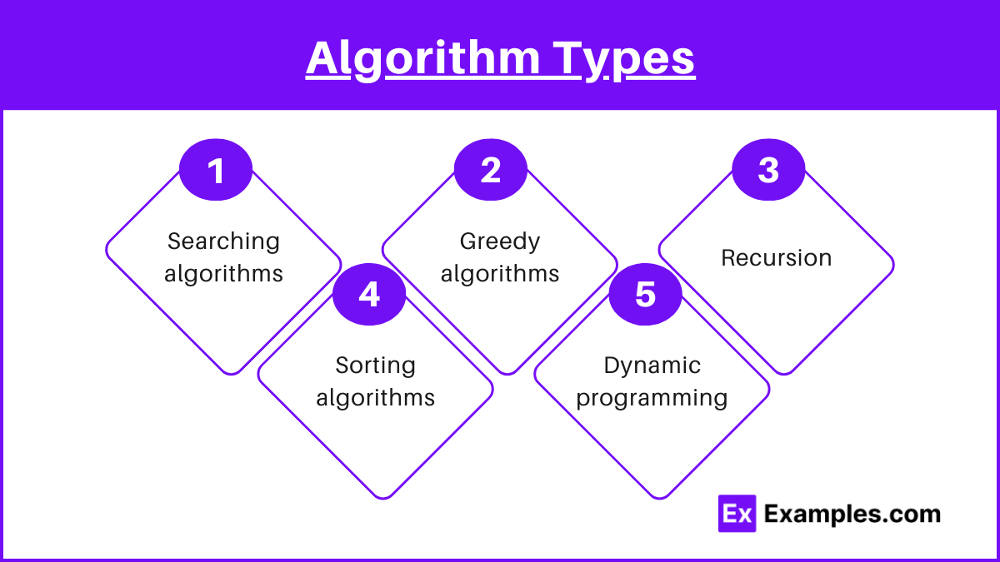

An algorithm can have different approaches and types. Different approaches required different techniques in order to solve the problem in the most optimized way. The most fundamental algorithms are:
- Recursive Algorithm: Based on recursion. A problem is solved by splitting into subproblems and calling itself repeatedly until the problem meets the base condition.
Ex: Factorial of n, Fibonacci Series, Tower of Hanoi
- Randomized Algorithm: Use random number to help decide expected outcome.
Ex: QuickSort - used to select pivot
- Sorting Algorithm: Sort data in ascending/descending order. It can also be used to arrange data in a useful way.
Sort examples: Bubble, Insertion, Merge, Selection
- Search Algorithm: Used to search a specific key in particular data.
Ex: Binary Search
There are different subtopics within algorithms that you can check out in the links above!
Source: geeksforgeeks
